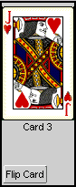

|
Manuel de référence du programmeur XUL
<deck>
L'élément <deck> fournit une manière de permuter dynamiquement des
éléments dans un groupe. Le <deck> est un conteneur pour tout élément
enfant qui peut être consulté en tant qu'élément classé via JavaScript et DOM,
comme dans l'exemple suivant:
<?xml-stylesheet href="chrome://global/skin/" type="text/css"?>
<window id="deck show"
xmlns:html="http://www.w3.org/1999/xhtml"
xmlns="http://www.mozilla.org/keymaster/gatekeeper/there.is.only.xul">
<html:script language="JavaScript">
var findex = 0;
function flipDeck() {
if (findex >= 2) { findex = 0 }
else {findex++ }
var deck = document.getElementById("card_deck");
deck.setAttribute("index", findex);
}
</html:script>
<box autostretch="never" >
<box height="200px" autostretch="never"
style="background-color: lightgrey; border: solid 2px"
orient="vertical">
<deck id="card_deck">
<titledbutton value="Card 1" style="list-style-image:url('card1.gif')" />
<titledbutton value="Card 2" style="list-style-image:url('card2.gif')" />
<titledbutton value="Card 3" style="list-style-image:url('card3.gif')" />
</deck>
<spring flex="100%" />
<titledbutton value="Flip Card" class="push"
onclick="flipDeck()"
autostretch="never" />
</box>
</box>
</window>
|
|
La fonction flipDeck(), appelée quand le bouton est cliqué, change
l'attribut index du containeur deck de telle sorte que
seulement l'enfant référencé par cet attribut soit affiché.
Dans Mozilla, l'exemple ressemble à cela:

|